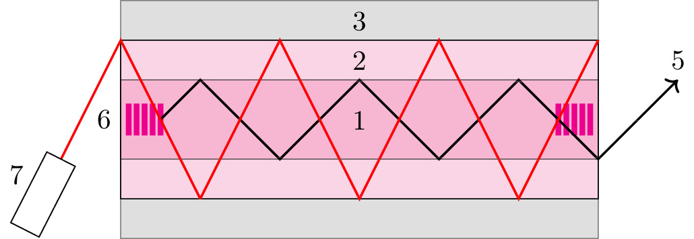

pre.tex
\documentclass[tikz]{standalone}\input{pre.tex}\begin{document}\begin{tikzpicture}
\xdef\darkness{0}
\xdef\opa{0.2}
\xdef\SIZE{6}
\xdef\setka{0}
\ifx\setka\undefined
{}
\else
\if\setka1
\draw[step=1.0,blue,thick, opacity=\opa] (0,0) grid (\SIZE,\SIZE);
\draw[step=0.5,blue,very thin, opacity=\opa] (0,0) grid (\SIZE,\SIZE);
\foreach \i in {0,1,...,\SIZE} {
\draw (0,\i) node [left, opacity=\opa] {\i};
\draw (\i,0) node [below, opacity=\opa] {\i};
}
\else
{}
\fi
\fi
% \coordinate (rot) at (3,3);
% \begin{scope}[rotate around={-25:(rot)}, every node/.style={rotate=-25}]
% \node [draw, shape=rectangle, fill=white, minimum width=0.25cm, minimum height=2cm, anchor=center] at (0,3) (res1) {};
% \node [draw, shape=rectangle, fill=white, minimum width=0.25cm, minimum height=2cm, anchor=center] at (5,3) (res2) {};
% \coordinate (envplace) at ($(res1.east)!0.2!(res2.west)$);
% \coordinate (polplace) at ($(res1.east)!0.5!(res2.west)$);
% \coordinate (pokplace) at ($(res1.east)!0.8!(res2.west)$);
% \draw[line width=1pt,magenta]
% (res1.east) -- (res2.west)
% ;
\node [draw, shape=rectangle, fill=black!30, opacity=0.5, minimum width=6cm, minimum height=3cm, anchor=center] at (3,1.5) (env) {};
\node [draw, shape=rectangle, fill=magenta!20, minimum width=6cm, minimum height=2cm, anchor=center] at (3,1.5) (env) {};
\node [draw, shape=rectangle, fill=magenta!50, opacity=0.5, minimum width=6cm, minimum height=1cm, anchor=center] at (3,1.5) (env) {};
% \end{scope}
% \draw[line width=1pt,magenta, dashed] (3,3) -- ++(25:2) node[right, black, , align=center] {дифрагированный \\ пучок};
% \draw[fill=white, opacity=0.8] (2.5,2) rectangle (3.5,4.5);
% \draw[fill=black!40, opacity=0.8] (3.5,4.5) -- (2.5,4) -- (2.5,4.5) --cycle;% rectangle (2.5,4.5);
% \draw[->] (3,1.5) node [below, align=center] {ВЧ--сигнал} -- (3,2);
\draw (0,1.5) node[left] {6};
\draw (3,2.5) node[above] {3};
\draw (3,2) node[above] {2};
\draw (3,1.25) node[above] {1};
\foreach \i in {0,...,4} {
\draw[magenta, line width=2pt] (0.1+\i/10,1.5-0.2) -- ++(0,0.4);
\draw[magenta, line width=2pt] (5.4+0.1+\i/10,1.5-0.2) -- ++(0,0.4);
}
\draw[black, thick,->]
(0.5,1.5) -- (1,2)
--++(1,-1)
--++(1,1)
--++(1,-1)
--++(1,1)
--++(1,-1)
--++(1,1) node [above] {5}
;
\draw[red, thick]
(1,0.5)
--++(1,2)
--++(1,-2)
--++(1,2)
--++(1,-2)
--++(1,2)
(1,0.5)--++(-1,2) --
++ (-0.5*1.5,-1*1.5) coordinate (A)%node [above] {4};
;
\draw
(A) -- ++ (-27:0.2) --
++ (-27-90:1) --
++ (-27+180:0.4) --
++ (-27+90:1) --
++ (-27:0.2) -- cycle
;
\draw (-1.1,0.8) node[left] {7};
\end{tikzpicture}\end{document}